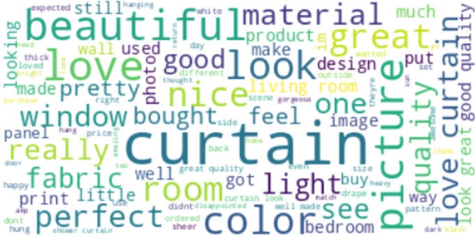
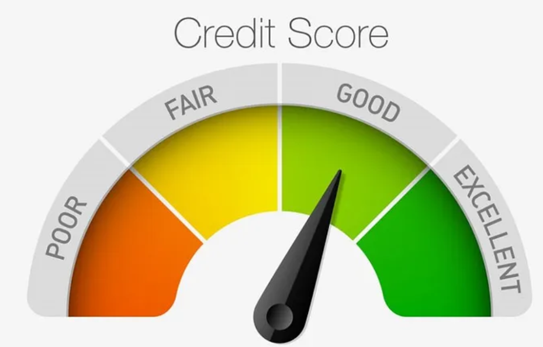
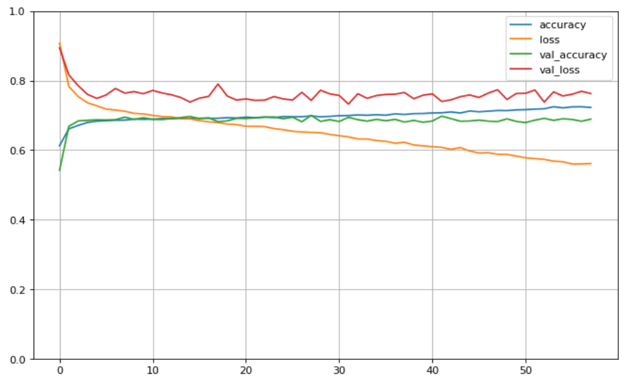
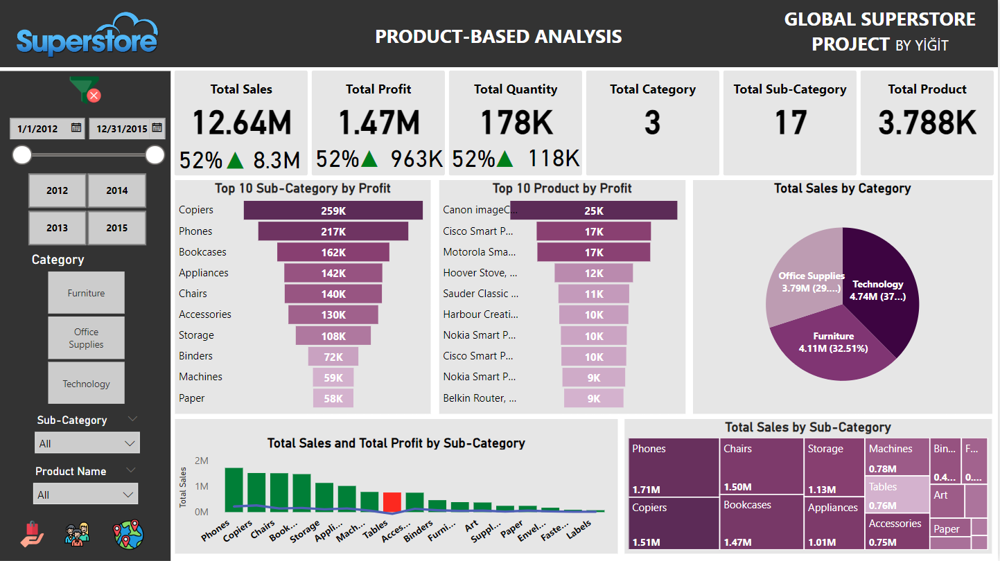
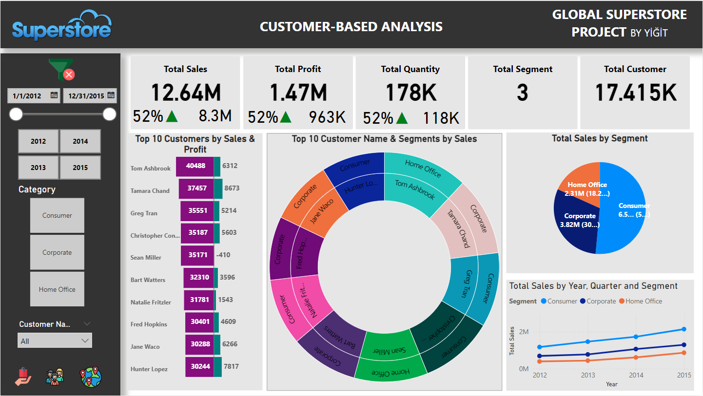

Sentiment Analysis: Amazon Kozmos Reviews
NLP preprocessing with NLTK, TF-IDF vectorization, then Logistic Regression and Random Forest classification.

View on KagglePersonal Portfolio
I’m a statistics student at Hacettepe University focused on machine learning, deep learning, and AI projects with practical business impact.
NLP preprocessing with NLTK, TF-IDF vectorization, then Logistic Regression and Random Forest classification.

View on KaggleCustomer credit classification using ANN with SMOTE balancing, plus full preprocessing and feature engineering.


Interactive BI dashboard with drillthrough, rich visual storytelling, and regional trend analysis.

